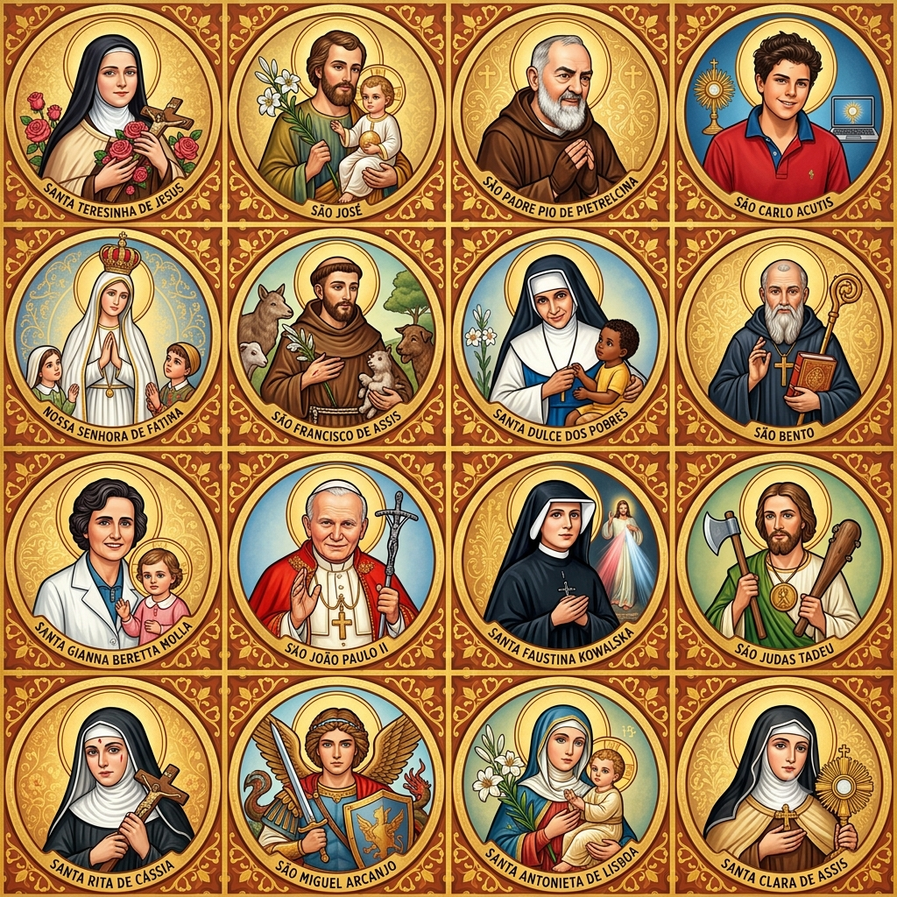
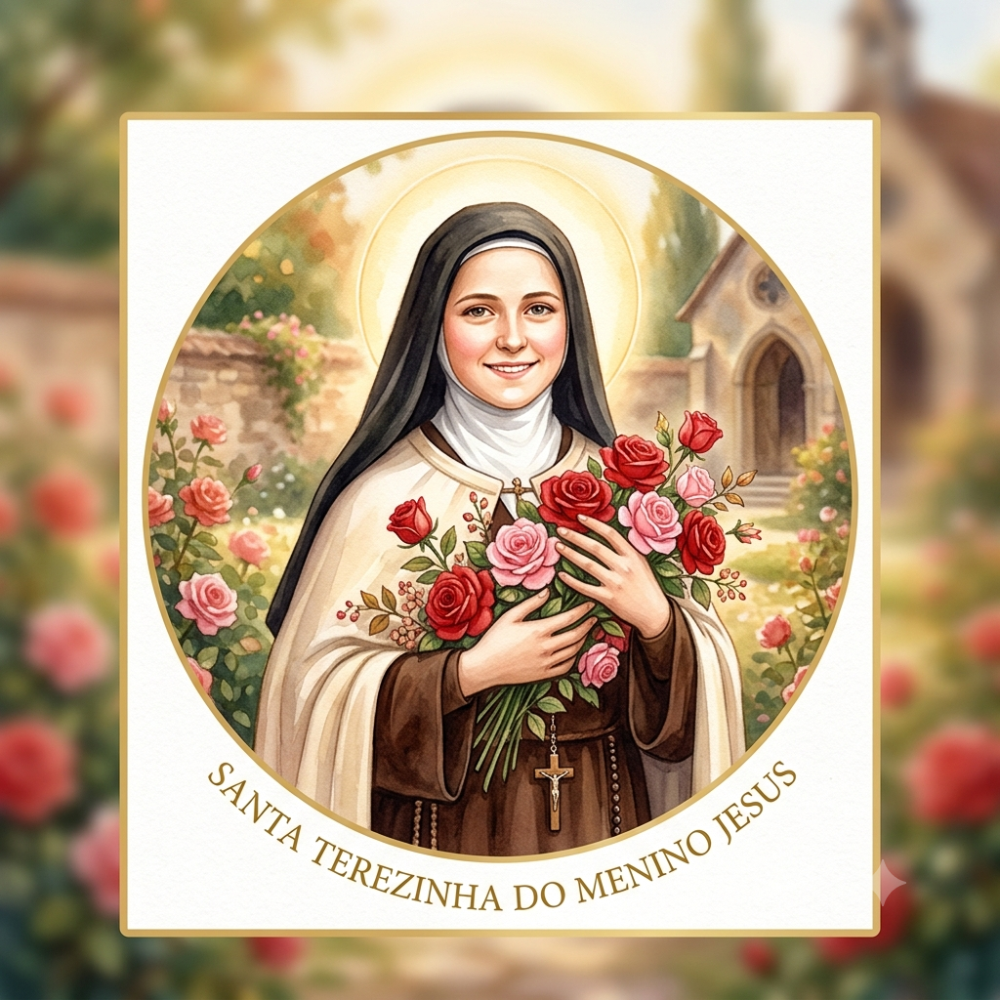

Meu primeiro post
Por: Julia Agem
A paz de Jesus, o amor de Maria e as bençãos de São José! Nesse blog vou compartilhar com vocês sobre a vida dos santos e como eles chegaram a santidade.

Santa Terezinha do menino Jesus
Por: Julia Agem
A paz de Jesus, o amor de Maria e as bençãos de São José! Ela prometeu fazer cair sobre nós chuva de rosas, hoje vamos nos aprofundar da história dessa santinha tão amada por tantos.
A infância de Tereza
Marie-Françoise-Thérèse Martin nasceu na França, em 1873. Desde muito pequena, ela era uma menina muito sensível e muito apegada à sua família. Quando ela tinha apenas 4 anos, sua mãe faleceu, o que foi um golpe muito duro para ela. Teresa ficou ainda mais tímida e chorava por qualquer coisa. No entanto, ela sempre teve um amor muito profundo por Deus, inspirado pelo exemplo de seus pais e de suas irmãs mais velhas.
O chamado e a 'Pequena Via'
Com apenas 15 anos, Teresa sentiu um desejo enorme de se dedicar totalmente à vida religiosa. Ela queria entrar para o mosteiro das Carmelitas, mas era considerada jovem demais. Ela não desistiu: viajou até Roma e chegou a pedir permissão diretamente ao Papa! Pouco tempo depois, ela conseguiu realizar seu sonho. Dentro do mosteiro, ela percebeu que não precisava fazer grandes sacrifícios ou atos heroicos para ser santa. Ela criou o que chamava de "Pequena Via": um caminho de santidade baseado em fazer as tarefas do dia a dia com um amor gigante.
O Sorriso e os Últimos Anos
Teresa enfrentou momentos difíceis, incluindo a tuberculose, uma doença grave na época. Mesmo sentindo muitas dores, ela raramente reclamava e tentava sempre manter um sorriso no rosto para não preocupar as outras freiras. Ela faleceu muito jovem, com apenas 24 anos, em 1897. Antes de morrer, ela prometeu que passaria o seu céu fazendo o bem na Terra e que mandaria uma "chuva de rosas" (que representam as graças e bênçãos) para quem pedisse sua ajuda.
A Chuva de Rosas e a Promessa de Terezinha
Pouco antes de falecer, Santa Terezinha disse uma frase que ficaria marcada para sempre: "Vou passar o meu céu fazendo o bem na Terra. Depois da minha morte, farei cair uma chuva de rosas". Para ela, as rosas simbolizavam as graças, bênçãos e favores que ela pediria a Deus em favor das pessoas que sofriam aqui no mundo. Até hoje, muitos fiéis relatam que, após rezarem a Novena das Rosas, recebem uma rosa física ou sentem um forte perfume de rosas como sinal de que sua oração foi ouvida.
Os Milagres que a Levaram aos Altares
Para que a Igreja Católica declare alguém como santo, é necessária a comprovação de milagres que aconteceram por meio da intercessão daquela pessoa. No caso de Santa Terezinha, o processo foi surpreendentemente rápido devido à quantidade de relatos. Entre os milagres oficiais analisados pelo Vaticano, destacam-se dois: A cura de uma jovem noviça: Uma freira chamada Irmã Charles sofria de uma grave doença pulmonar e estava desenganada pelos médicos. Após pedir a intercessão de Terezinha, ela ficou completamente curada de forma inexplicável. A cura de uma criança: Um menino que sofria de uma cegueira severa recuperou a visão completamente após sua família rezar e pedir a ajuda da santa carmelita. Esses e outros episódios fizeram com que o Papa Pio XI a canonizasse em 1925, chamando-a de "uma tempestade de milagres".
Conclusão: O Legado de Amor de Santa Terezinha
Muito obrigado por acompanhar a história de Santa Terezinha do Menino Jesus aqui no blog! Que o exemplo de sua "Pequena Via" nos inspire a colocar mais amor nas pequenas atitudes do nosso dia a dia. Se você gostou de conhecer mais sobre a vida, as promessas e os milagres da Santa das Rosas, não se esqueça de compartilhar este post com seus amigos e familiares, e deixe seu comentário contando o que mais te emocionou. Até a próxima leitura!
Fontes e Referências:
Vatican News (Histórico de canonização e biografia oficial dos santos). Livro: História de uma Alma (Autobiografia de Santa Teresa do Menino Jesus). Portal Canção Nova / Editora Cléofas (Artigos teológicos sobre a Novena das Rosas e os milagres documentados).